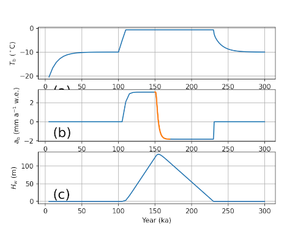

enthalpy_benchmark
The landice/enthalpy_benchmark test group implements variants of the
enthalpy benchmark from
Kleiner et al (2015).
The domain is a 2 by 2 cell column. <<<Further description here>>>
The test group includes 2 test cases. All test cases have 3 steps,
setup_mesh, which defines the mesh and initial conditions for the model;
run_model (given another name in many test cases to distinguish multiple
forward runs), which performs time integration of the model; and visualize,
which plots the results of the test case to PNG files and optionally also to
plot windows.
config options
Both test cases share the same set of default config options:
# namelist options for enthalpy benchmark test cases
[enthalpy_benchmark]
# sizes of the mesh (in cells)
nx = 2
ny = 2
# resolution of the mesh (in m)
dc = 1000.0
# namelist options related to visualization for enthalpy benchmark test cases
[enthalpy_benchmark_viz]
# whether to show show plot window
display_image = False
A
landice/enthalpy_benchmark/A/ implements Benchmark A from
Kleiner et al (2015). Config
options for this test case are:
# namelist options for enthalpy benchmark test cases
[enthalpy_benchmark]
# number of levels in the mesh
levels = 50
# the initial thickness of the ice sheet (in m)
thickness = 1000.0
# the basal heat flux (in W m^{-2})
basal_heat_flux = 0.042
# the initial surface air temperature (in K)
surface_air_temperature = 243.15
# the initial ice temperature (in K)
temperature = 243.15
# the surface air temperature (in K) for the first 100,000 years
phase1_surface_air_temperature = 243.15
# the surface air temperature (in K) for the next 50,000 years
phase2_surface_air_temperature = 268.15
# the surface air temperature (in K) for the final 150,000 years
phase3_surface_air_temperature = 243.15
The test case is initialized with a 1000-m column of ice with 50 vertical levels. The benchmark prescribes a constant basal heat flux of 0.042 \(W\,m^{-2}\) and an initial ice and air temperature of 243.15 K. The model is integrated forward in time with these conditions for 100,000 years, at which point the air temperature is increased to 268.15 K for 50,000 years of further integration. Finally, the surface air temperature is decreased back to 243.15 K for an additional 150,000 years of model integration.
{kind=link}
B
landice/enthalpy_benchmark/B/ implements Benchmark B from
Kleiner et al (2015). Config
options for this test case are:
# namelist options for enthalpy benchmark test cases
[enthalpy_benchmark]
# number of levels in the mesh
levels = 400
# the initial thickness of the ice sheet (in m)
thickness = 200.0
# the basal heat flux (in W m^{-2})
basal_heat_flux = 0.0
# the initial surface air temperature (in K)
surface_air_temperature = 270.15
# the initial ice temperature (in K)
temperature = 270.15
<<<Further description needed.>>>
This test case also requires changes to the MALI code, as described in the
README file.